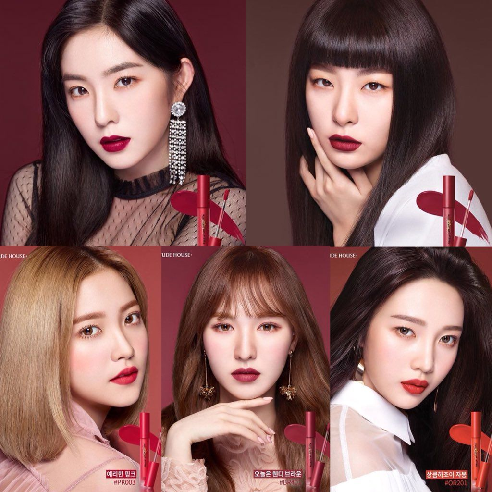

Red Velvet (en hangul, 레드벨벳; romanización revisada del coreano, Redeu Belbet)
es un grupo femenino surcoreano formado por S.M. Entertainment.
El grupo debutó el 1 de agosto de 2014 con su sencillo digital «Happiness» y cuatro miembros:
Irene, Seulgi, Wendy y Joy. El 11 de marzo de 2015, Yeri fue añadida como la quinta y última integrante.
Desde su debut, Red Velvet ha obtenido éxito y reconocimiento.
Su primer EP, Ice Cream Cake, encabezó la lista de álbumes de Gaon a principios de 2015.
De forma similar, el primer álbum de estudio del grupo, The Red (2015) y los otros miniálbumes,
The Velvet,Russian Roulette, ambos liberados en 2016, y Rookie (2017) alcanzaron el primer lugar en Gaon Album Chart.
Además, The Red, Rookie y The Red Summer (2017) también encabezaron los Billboard World Albums,
y con el lanzamiento de su segundo álbum de estudio Perfect Velvet (2017),
se convirtieron en el grupo de chicas de K-pop con la mayor cantidad de álbumes en la lista y empatando con otros actos de K-pop.
Red Velvet ha recibido premios al «Mejor nuevo artista» en los Golden Disk Awards y los Seoul Music Awards,
además de premios por sus coreografías en los Melon Music Awards y en los Mnet Asian Music Awards.
Pre-Debut
Antes de su debut, Irene, Seulgi, Wendy y Yeri eran parte de SM Rookies,
un grupo de predebut de SM Entertainment bajo SR14G (SM Rookies 2014 Girls).
Seulgi fue la primera en ser reclutada en 2007 a través de SM Saturday Open Audition17 e hizo
un cameo en el videoclip de «Fantastic» de Henry.
Irene se convirtió en aprendiz de SM Entertainment en 2009 e hizo un cameo en «1-4-3 (I Love You)» del mismo artista.
Wendy fue reclutada en 2012 durante SM Global Audition en Canadá,20 y lanzó una banda sonora para el drama Mimi.
Joy fue reclutada a través de SM Global Audition en Seúl en 2012.
Finalmente, Yeri fue seleccionada a través de SM Global Audition en los Estados Unidos en 2011.
Noticias sobre el debut de Irene, Seulgi y Wendy en un grupo salieron a la luz en julio,
que fueron confirmadas por la discográfica.